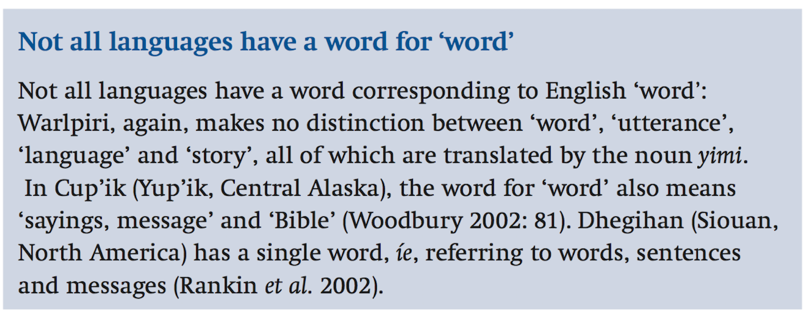

- Pre-processing for Text Analytics
- Linguistics 101
- Crash course for R
謝舒凱 Graduate Institute of Linguistics, NTU
垂直處理
to walk, walked, walking.The difference is that a stemmer operates on a single word without knowledge of the context, and therefore cannot discriminate between words which have different meanings depending on part of speech.
水平處理
中文分詞（斷詞）Chinese word segmentation 可以看成是 tokenization 的一個特例，但是涉及更深一層的語言與認知互動。
因為 (漢語) 語言分析的基本單位沒有你想的那麼穩固， 自然語言處理先卡關才引起注意。
昨天阿里巴巴創辦人馬雲端上新的網路服務但是 Wordhood 的問題不是漢語才有。

這個門把手壞了 vs 請把手拿開。化妝/和/服裝 vs 化妝/和服/裝。包括新詞、術語等未收錄在字典裡面的「詞」。至少包括了：
組合規律
前後規律
校長、老闆老師、教授、小姐、先生附帶一提：人名的自動辨識與分群 (person name identification/clustering) 也是個 NLP 研究領域，更難一點的還有轉譯人名的問題 (transliterated person name identification).
舉一個例子：常識抽取對於情緒分析的重要
“我昨天深夜在鐵工廠看到一個小女孩”
利用 tm/tmcn 等套件，把中英文的前處理跑過一次。
參考 typical.tm.Rmd